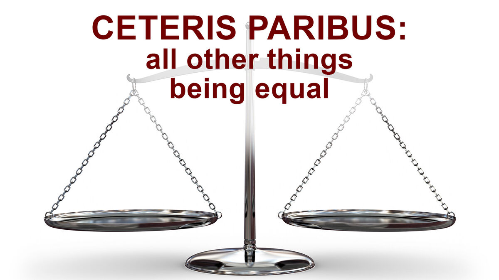
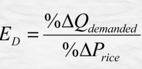
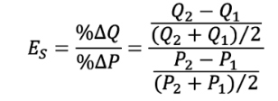
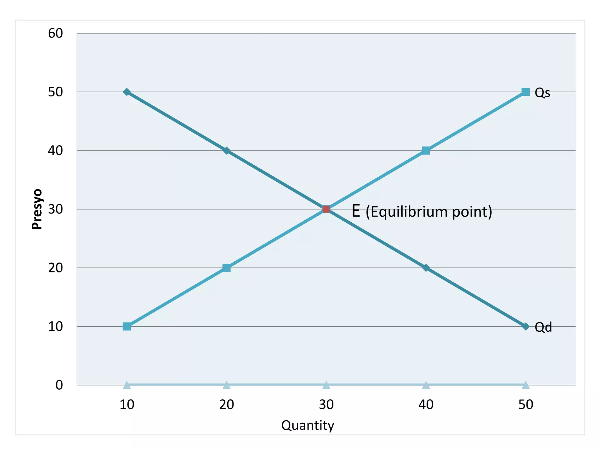
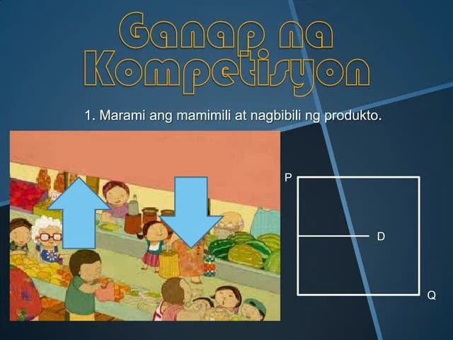
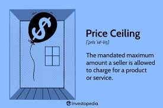
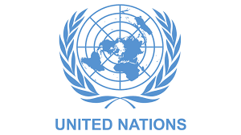
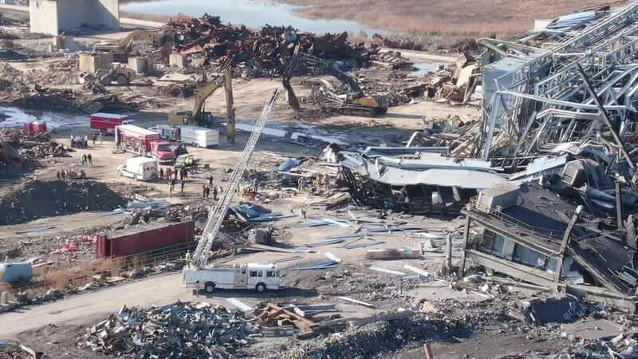
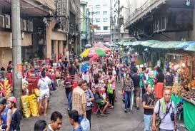
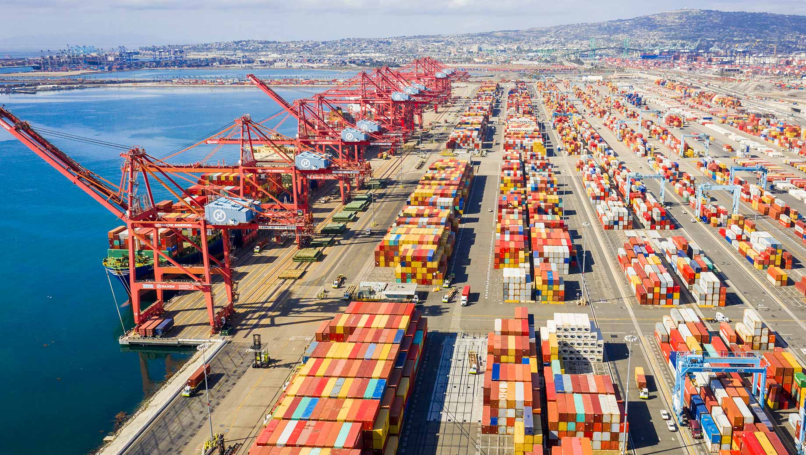

Here are my six AP lessons, each with essay reflections and photos.
Lesson 1 – Demand
Tumutukoy sa dami ng produkto o serbisyo na gusto at kayang bilhin ng mga mamimili sa isang takdang presyo at partikular na panahon.

BATAS NG DEMAND – Kapag tumataas ang presyo, bumababa ang dami ng gusto at kayang bilhin at kapag bumaba ang presyo, tataas naman ang dami ng gusto at kayang bilhin.
CETERIS PARIBUS - Nangangahulugang ipinagpapalagay na ang presyo lamang ang salik na nakaaapekto sa pagbabago ng quantity demanded, habang ang ibang salik ay hindi nagbabago o nakakaapekto rito.
DALAWANG KONSEPTONG NAGPAPALIWANAG KUNG BAKIT MAY MAGKASALUNGAT O INVERSE NA UGNAYAN SA PAGITAN NG PRESYO AT QUANTITY DEMANDED-
1. SUBSTITUTION EFFECT- ipinapahayag nito na kapag tumataas ang presyo ng isang produkto, ang mga mamimili ay hahanap ng pamalit na mas mura. Sa ganon, mababawasan ang dami ng mamimiling gustong bumili ng produktong may mataas na presyo.
2. INCOME EFFECT- nagpapahayag na mas malaki ang halaga ng kinikita kapag mas mababa ang presyo. Kapag mababa ang presyo ng bilihin, mas mataas ang kakayahan ng kita ng tao na makabili ng mas maraming produkto. Kapag tumaas naman ang presyo, lumiliit ang kakayahan ng kaniyang kita na maipambili. Lumiliit ang kakayahan ng kita na makabili ng mga produkto o serbisyo kaya nababawasan ang dami ng mabibiling produkto
MGA SALIK NA NAKAAAPEKTO SA DEMAND-
KITA
Sa pagtaas ng kita ng isang tao, tumataas ang kaniyang kakayahan na bumili ng mas maraming produkto
PANLASA
Kapag ang isang produkto o serbisyo ay naaayon sa iyong panlasa, maaaring tumaas ang demand para dito.
DAMI NG MAMIMILI
“Bandwagon effect”
Dahil sa dami ng bumibili ng isang produkto, nahihikayat kang bumili.
Sumabay sa uso
INAASAHAN NG MGA MAMIMILI SA PRESYO SA HINAHARAP
Kung inaasahan ng mga mamimili na tataas ang presyong isang partikular na produkto sa mga susunod na araw o linggo, asahan na tataas ang demand nito sa kasalukuyan habang mababa pa ang presyo nito
OKASYON
Ang mga Pilipino ay nagdiriwang kahit mahal ang mga bilihin
KLIMA O PANAHON-
May mga produktong tumataas ang demand depende sa panahon, tulad ng payong sa tag-ulan at ice cream sa tag-init.
DEMAND FUNCTION
Isang matematikong pagpapakita o paglalahad sa ugnayan ng presyo at quantity demanded sa pamamagitan ng formula (Qd)= a-bP
QD= Dami ng demand
a= dami ng demand kung saan ang presyo ay 0
b= slope ng demand function
P= presyo
PRICE ELASTICITY OF DEMAND
Ito ang paraan na ginagamit upang masukat ang pagtugon at kung gaano kalaki ang magiging pagtugon ng quantity demanded ng tao sa isang produkto sa tuwing may pagbabago sa presyo nito.
FORMULA:

Lesson 2 – Supply
Tumutukoy sa dami ng produkto o serbisyo na gustong ibenta ng mga prodyuser sa isang takdang presyo at partikular na panahon
SUPPLY SCHEDULE
Talahanayan nagpapakita kung gaano karaming produkto o serbisyo ang nais gawin ng mga prodyuser
SUPPLY FUNCTION
Isang matematikal equation na nagpapakita sa relasyon ng dami ng supply at presyo
Qs= -a + bP
QS- dami ng suplay
A- dami ng supply kung ang presyo ay zero
B- slope
P- presyo
BATAS NG SUPPLY
Kapag tumataas ang presyo, tataas ang dami ng gusto at kayang ibenta, at kapag mababa ang presyo, bababa naman ang dami ng gusto at kayang ibenta (CETERIS PARIBUS)
MGA SALIK NA NAKAAAPEKTO SA SUPLAY
Pagbabago sa teknolohiy
Teknolohiya ay nakatutulong sa mga prodyuser na makabuo ng mas maraming suplay
Pagbabago sa halaga ng mga salik produksiyon
Sa bawat pagtaas ng presyo ng alinmang salik, mangangahulugan ito ng pagtaas sa kabuuang gastos ng produksyon kaya maaaring bumaba ang suplay
Pagbabago sa bilang ng nagtitinda
Bandwagon effect
Kung ano ang mga nauusong produkto ay nahihikayat ang mga prodyuser na magprodyus at magtinda nito
Pagbabago sa presyo ng kaugnay na produkto (complementary at substitue products)
Naaapektuhan ang parehong produkto
Ekspektasyon sa presyo
“Kung tataas ang presyo sa hinaharap, maghohoard ang mga prodyuser ngayon”
Okasyon
Panahon o klima
Kalamidad
Dali ng pagkasira o pagkabulok ng produkto
Subsidy o tulong ng pamahalaan
Lesson 3 – Price Elasticity
Price elasticity measures how sensitive demand or supply is to price changes.
MGA URI NG ELASTISIDAD
1. Elastic (>1)
Kahulugan: Mas malaki ang naging bahagdan ng pagtugon ng QD (quantity demanded) kaysa sa bahagdan ng pagbabago sa presyo.
Uri: Elastic
2. Inelastic (<1)
Kahulugan: Mas maliit ang naging bahagdan ng pagbabago ng QD kaysa sa bahagdan ng pagbabago sa presyo.
Uri: Inelastic
3. Unitary (=1)
Kahulugan: Pareho ang bahagdan ng pagbabago. Tapat o pantay ang pagbabago ng presyo at quantity demanded.
Uri: Unitary
4. Perfectly Elastic (∞)
Kahulugan: Anumang pagbabago sa presyo ay magdudulot ng walang hanggan (infinite) na pagbabago sa quantity demanded.
Uri: Perfectly Elastic
5. Perfectly Inelastic (0)
Kahulugan: Ang quantity demanded ay hindi tumutugon sa anumang pagbabago ng presyo.
Uri: Perfectly Inelastic

PRICE ELASTICITY NG SUPPLY
paraan na ginagamit upang masukat ang magiging pagtugon ng quantity supplied ng mga prodyuser sa tuwing may pagbabago sa presyo nito
Ang formula ng Price Elasticity of Demand (PED) ay:
Ed = (% Pagbabago sa Quantity Demanded) ÷ (% Pagbabago sa Presyo)
Ang ibig sabihin nito ay sinusukat ng elasticity kung gaano kalaki ang pagtugon ng mga mamimili sa pagbabago ng presyo ng isang produkto.
Lesson 4 – Market Equilibrium
Isang kalagayan sa pamilihan na ang dami ng handa at kayang bilhing produkto o serbisyo ng mga konsyumer at ang handa at kayang ipagbiling produkto at serbisyo ng mga prodyuser ay pareho ayon sa presyong kanilang pinagkasunduan

EKWILIBRIYONG PRESYO-
Pinagkasunduang presyo ng konsyumer at prodyuser
EKWILIBRIYO DAMI-
Napagkasunduang dami ng mga produkto o serbisyo
DISEKWILIBRIYO-
Anumang sitwasyon o kalagayan na hindi pareho ang quantity demanded at quantity supplied sa isang takdang presyo
SHORTAGE
Ang dami ng demand ay mas malaki sa dami ng supply
SURPLUS
Mas marami ang quantity supplied kaysa sa quantity demanded
Lesson 5 – Iba’t-ibang Estraktura ng Pamilihan
Ang nagsisilbing lugar kung saan nakakamit ng isang konsyumer ang sagot sa marami niyang pangangailangan at kagustuhan sa pamamagitan ng mga produkto at serbisyong handa at kaya niyan ikonsumo.
PAMILIHAN
3 ELEMENTO NG ISANG PAMILIHAN
Mamimili
Prodyuser/negosyante
Produkto
PAGKAKAIBA NG MGA ANYO/URI NG PAMILIHAN
Bilang at laki ng prodyuser o konsyumer
Uri ng produkto o serbisyo
Kontrol sa pagpasok sa pamilihan
Kontrol sa presyo
Paggamit ng di-presyong kompetisyon
URI NG PAMILIHAN
Lokal
Panrehiyon
Pambansa
Pandaigdigan

GANAP NA KOMPETISYON
1. Maraming konsyumer at prodyuser sa industriya
2. Ang mga produkto ng mga kalakalan sa industriya ay magkakatulad
3. Ang mga kalakalan sa industriya ay tinatawag na price takers
4. Malayang nakapapasok at nakalalabas ang mga kalakalan sa produksyon
5. Walang kontrol sa presyo
-GANAP NA KOMPETISYON
Isang estruktura ng pampamilihan na kung saan ang indibidwal na kalakalan ay may kontrol sa presyo ng kalakalan
DI-GANAP NA KOMPETISYON-
MONOPOLYO
Iisa ang prodyuser
Ang produkto ay walang malapit na kapalit
Ang monopolista price maker ng produkto
Napakahirap ang pagpasok ng mga bagong prodyuser sa ganitong pamilihan
Ang pag-anunsyo sa produk to ay maaaring gamitin o hindi
OLIGOPOLY
Kakaunti lamang ang mga prodyuser sa industriya
Ang mga produkto ay maaaring magkakatulad o magkakaiba
Malaki ang kontrol ng mga kalakalan pagdating sa presyo
Mahirap ang papasok ng mga bagong prodyuser sa ganitong pamilihan
Gumagastos ng malaki ang mga kalakalan sa pag-aanunsyo, pananaliksik,& pag-unlad
MONOPOLISTIC COMPETITION
May katamtamang dami ng mga prodyuser at konsyumer
Ang mga industriya ay agresibong nakikipagkompetensya sa isa’t isa
Mayroong malawakang pag-aanunsyo
May kaunting control sa presyo dahilan sa pagkakaiba-iba ng produkto
Madali ang pagpasok ng mga bagong prodyuser kung ikukumpara sa monopoly at oligopoly.
MONOPSONY
Mayroon lamang iisang konsyumer ngunit maraming prodyuser ng produkto at serbisyo
May kapangyarihan ang konsyumer na maimpluwensiyahan ang presyo sa pamilihan
Lesson 6 – Bahaging Ginagampanan ng Pamahalaan sa Regulasyon ng mga Pamilihan
Ito ay isang mahalagang institusyon sa ating bansa, alinsunod sa itinadhana ng Artikulo II Seksyon 4 ng 1987 konstitusyon ng Pilipinas. Pangunahing tungkulin ng pamahalaan na paglingkuran at pangalagaan ang sambayanan.
ANG PAGKONTROL SA PRESYO NG PAMAHALAAN
PRICE CONTROL
Pagtatadhana ng pamahalaan ng pinakamababa at pinakamataas na presyong maaaring itakda sa mga produkto at serbisyo
REPUBLIC ACT 7581
Price Control Act
Layunin na maisagawa ng pamahalaan ang pagkontrol sa presyo ng mga bilihin

ATIONAL PRICE COORDINATION COUNCIL
May layunin na mabantayan ang presyo ng mga produkto pagkatapos magpalabas ng price ceiling ang mga pamahalaan
PRICE CEILING
Ang pinakamataas na presyong tinakda ng pamahalaan upang
ipagbili ang mga produkto
Isinasagawa ng pamahalaan upang tulungan at bigyang proteksyon ang mga mamimili laban sa mga abusado at mapagsamantalang mga negosyante
Itinatakda ito na mas mababa sa equilibrium price na umiral sa pamilihan
PRICE SUPPORT
Isinasagawa ng pamahalaan upang tulungan at bigyang proteksyon ang mga prodyuser upang mabayaran ang mga gastos ng produksyon
FLOOR PRICE
Pinakamababa na presyong tinakda ng pamahalaan upang ipagbili ang mga produkto
Itinatakda ito na mas mataas sa equilibrium price na umiral sa pamilihan
.
REFLECTION
Sa aming mga aralin sa Ekonomiks, natutunan ko kung paano gumagalaw ang ekonomiya ng ating bansa. Naiintindihan ko na ang demand, supply, at presyo ay mahalaga sa pamumuhay ng tao. Natutunan ko rin ang kahalagahan ng pagtitipid at tamang paggamit ng mga yaman. Ang mga araling ito ay nagturo sa akin kung paano maging responsable at makatulong sa pag-unlad ng bansa.
Lesson 1 – PAMBANSANG KAUNLARAN
Isang estado ng bansa kung saan tinatamasa ng mga tao mula sa pinakamababang uri ng mamamayan ang nakakamanghang pagbabago sa ekonomiya at pamumuhay
Pagbabago
Paraan upang maging iba o naiiba
Proseso ng pag-iiba o pagkakaroon ng kaibahan sa lipunan at ekonomiya
Pag-unlad
Pagbabago mula sa mababa tungo sa mataas na antas ng pamumuhay
Pag-angat, pagsulong, o paglago sa pangkalahatang aspeto ng pamumuhay
Isang progresibo at aktibong proseso at ang pagsulong ay produkto nito (FAJARDO)
Ang kaunlaran ay matatamo lamang kung mapauunlad ang yaman ng buhay ng mga tao kaysa sa yaman ng ekonomiya nito (AMARTYA SEN)
Pagsulong
Pag-usad tungo sa iyong layunin o goal
Pagpapaunlad ng kakayahan, kaalaman, at abilidad upang makasabay sa agos ng buhay
Ebolusyon
Pagbabago sa mga katangian sa loob ng mahabang panahon
Anuman ang unang dumating ay mas mabuti sa sinundang panahon
DALAWANG KONSEPTO NG PAG-UNLAD (TODARO & SMITH, 2012)
TRADISYUNAL
Pagtamo ng patuloy na pagtaas ng income per capita.
TRADISYUNAL
Pagtamo ng patuloy na pagtaas ng income per capita.
MAKABAGO
Dapat na kumakatawan sa malawakang pagbabago sa buong sistemang panlipunan.
MGA SALIK NA MAAARING MAKATULONG SA PAGSULONG NG EKONOMIYA
Likas na yaman
Yamang-tao
Kapital
Teknolohiya at Inobasyon
MGA PALATANDAAN NG PAG-UNLAD
Makatwiran at dinamikong kaayusan ng panlipunan
Kasaganaan at kasarinlan
Kalayaan sa kahirapan, hanapbuhay para sa lahat, umaangat na istandard ng pamumuhay, at mainam na uri ng buhay para sa lahat
Sapat na mga lingkurang panlipunan
Katarungang panlipunan

UKATAN NG KAUNLARAN NG BANSA AYON SA UNITED NATIONS
Maliban sa paggamit ng GDP at GNP, ginagamit ang Human Development Index (HDI) bilang isa sa mga panukat sa antas ng pag-unlad ng isang bansa.
Human Development Index (HDI)
Pangkalahatang sukat ng kakayahan ng isang bansa na matugunan ang mahahalagang aspekto ng kaunlarang pantao.
Kabilang dito ang kalusugan, edukasyon, at antas ng pamumuhay.
ANTAS NG KAUNLARAN NG BANSA
Maunlad na Bansa o Developed Economies
Mga bansang may mataas na GDP, income per capita, at mataas na HDI
Umuunlad na Bansa o Developing Economies
Mga bansang may mga industriyang kasalukuyang pinauunlad ngunit wala pang mataas na antas ng industriyalisasyon
Hindi pantay ang GDP at HDI
Papaunlad na Bansa o Underdeveloped Economies
Mga bansang kung ihahambing sa iba ay kulang sa industriyalisasyon
Mababang antas ng agrikultura at mababang GDP, income per capita, at HDI
MGA TUNGKULIN PARA SA PAG-UNLAD NG BANSA
Suportahan ang ating pamahalaan.
Sundin at igalang ang batas.
Alagaan ang ating kapaligiran.
Tumulong sa pagpuksa sa korapsyon at katiwalian sa pamahalaan.
Maging produktibo.
Tangkilikin ang mga produktong Pilipino.
Magtipid ng enerhiya.
Makilahok sa mga gawaing pansibiko.
MGA GAMPANIN NG MAMAMAYAN SA PAG-UNLAD NG BANSA
Mapanagutan
Tamang pagbabayad ng buwis
Makialam
Maabilidad
Bumuo o sumali sa kooperatiba
Pagnenegosyo
Maalam
Tamang pagboto
Pagpapatupad at pakikilahok sa mga proyektong pangkaunlaran sa komunidad
Makabansa
Pakikilahok sa pamamahala ng bansa (participative governance)
Pagtangkilik sa mga produktong Pilipino
Lesson 2 – SEKTOR NG AGRIKULTURA
Isang agham at sining na may kinalaman sa pagpaparami ng mga hayop at mga tanim o halaman
AGRIKULTURA
Ito ay may kaugnayan sa lahat ng gawain na sangkot ang mga hayop at halaman
AGER=Lupa; CULTURA=Paglilinang
GAMPANIN NG PAGSASAKA
Pangunahing pananim: palay, mais, niyog, tubo, saging, pinya, atbp. na karaniwang kinokonsumo sa loob at labas ng bansa.
Tinatayang umabot ng ₱797.731 bilyon ang kita mula sa pagsasaka
GAMPANIN NG PANGINGISDA
Nauuri sa tatlo: komersiyal, munisipal, at aquaculture
Bahagi din nito ay ang panghuhuli ng hipon, sugpo
GAMPANIN NG PAGHAHAYUPAN
May kinalaman sa mga hayop na itinaas para sa karne, hibla, gatas, itlog, atbp.
Kasama rito ang pang-araw-araw na pangangalaga, pumipili ng pag-aanak at pagpapalaki ng mga hayop
GAMPANIN NG PAGGUGUBAT
Patuloy na nililinang ang ating mga kagubatan bagamat tayo ay nahaharap sa suliranin ng pagkaubos ng mga yaman nito
Pinagkukunan ng: plywood, tabla, troso, at veneer
Pinagkakakitaan din ang rattan, nipa, anahaw, kawayan, atbp.
KAHALAGAHAN NG AGRIKULTURA
Pinagmumulan ng pagkain
Pinagkukunan ng hilaw na materyales upang makabuo ng panibagong produkto
Nagkakaloob ng trabaho sa maraming Pilipino
Nagpapasok ng dolyar sa ating bansa
Pinagkukunan ng sobrang manggagawa patungo sa ibang sektor ng ekonomiya
SULIRANIN NG AGRIKULTURA
Pagsasaka
pagliit ng lupang sakahan
paggamit ng makabagong teknolohiya
kakulangan ng mga pasilidad at imprastraktura sa kabukiran
kakulangan ng suporta mula sa iba pang sektor
pagbibigay prayoridad sa sektor ng industriya, pagdagsa ng dayuhang kalakal
Climate Change
Pangingisda
mapanirang operasyon ng malalaking komersiyal na mangingisda
epekto ng polusyon sa pangisdaan
lumalaking populasyon ng bansa
kahirapan sa hanay ng mga mangingisda
Paghahayupan
pagkakaroon ng mga peste sa alagang hayop tulad ng baboy at manok
Paggugubat
mabilis na pagkaubos ng mga likas na yaman
MGA PATAKARAN AT PROGRAMA HINGGIL SA PAGPAPAUNLAD SA SEKTOR NG AGRIKULTURA
PANAHON NA HINDI PA NASASAKOP ANG PILIPINAS
Ang mga sinaunang Pilipino ay nakakapag-may-ari ng lupa sa pamamagitan ng pagiging unang nagtayo ng bahay.
Wala pang titulo/rights noon
Ang pinagbabasehan lamang ay salita ng bawat isa.
PANAHON NG KASTILA
Encomienda System:
Encomienda - lupang gantimpala sa matapat na naglilingkod sa hari ng Espanya at mga taong tumulong sa pananakop sa Pilipinas.
PANAHON NG AMERIKANO
Binili ng Amerika ang 160,000 hectares ng lupa mula sa mga prayle para sa mga magsasaka.
Land Registration Act ng 1902:
Nagkaroon ng mga titulo dahil dito.
Ito ay sistemang Torrens, kung saan ang mga titulo ng lupa ay ipinatalang lahat.
Public Land Act ng 1902: Pamamahagi ng mga lupaing pampubliko sa mga pamilya na nagbubungkal ng lupa
PANAHON NG KASARINLAN
Batas Republika Blg. 1160: Nagtatag sa National Resettlement and Rehabilitation Administration (NARRA)
Batas Republika Blg. 1190 ng 1954:
Bilang proteksyon laban sa mapang-abuso na may-ari ng lupa sa mga manggagawa.
Ito ay laban sa mga Absentee Landlord
Agricultural Land Reform Code of 1963:
Nagpalaya sa mabigat na trabaho ng magsasaka mula sa kanilang pagkaalipin sa utang at kahirapan.
Nilagdaan ni Diosdado Macapagal noong Agosto 8, 1963
Atas ng Pangulo Blg. 2 ng 1972: Isailalim sa reporma sa lupa ang buong Pilipinas noong panahon ni Pangulong Marcos
Atas ng Pangulo Blg. 27: Bibilhin ng pamahalaan ang mga lupang sakahan na taniman ng palay/mais na lampas sa 7 ektaryang limitasyon at ipamamahagi ito sa mga magsasakang walang lupa.
Batas Republika Blg. 6657 ng 1988:
“Comprehensive Agrarian Reform Law (CARL)” na inaprubahan ni Corazon Aquino noong Hunyo 10, 1988
Kabilang dito ang lahat ng publiko at pribadong lupang agrikultural at nakapaloob sa Comprehensive Agrarian Reform Program (CARP)
Ipinamamahagi ang lahat ng lupang agrikultural anuman ang tanim nito sa mga walang lupang magsasaka.
Matatapos sana sa 10 taon ngunit ginagawa pa rin ang batas hanggang ngayon.
MGA NAISAKATUPARAN UPANG MAIANGAT ANG KALAGAYANG PANGKABUHAYAN NG MGA MAGSASAKA (CARP, 2003)
Pagtatayo ng bahay-ugnayan (bagsakan) para sa mga magsasaka upang masigurong mayroon suportang maibigay sa kanila.
Pagtatayo ng gulayan para sa mga magsasaka.
Pagsisiguro na ang mga anak ng mga magsasaka ay makapag-aral kaya itinayo ang Pangulong Diosdado Macapagal Agrarian Reform Scholarship Program
Kalahi agrarian reform zones
BATAS REPUBLIKA BLG. 6657 ng 1988
Hindi sakop ng CARP ang:
Liwasan at parke
Mga gubat at reforestation area
Mga palaisdaan
Tanggulang pambansa
Paaralan
Simbahan
Sementeryo
Templyo
Watershed, atbp.
PANGINGISDA
> Pagtatayo ng mga daungan
>.Philippine Fisheries Code of 1998: Paglilimita ng pamahalaan at naglalayon ng wastong paggamit sa yamang pangisdaan.
> Fishery Research:
Isang programa ng pamahalaan na isinasagawa upang masiguro ang pagpaparami at pagpapayaman sa mga yamang-tubig
PAGTOTROSO
> Community Livelihood Assistance Program (CLASP): Paglilipat ng teknolohiya/pagtuturo sa mga mamamayan ng wastong paglinang sa mga likas na yaman.
> National Integrated Protected Areas System (NIPAS): Maingatan at protektahan ang kagubatan
> Sustainable Forest Management Strategy: Upang matakdaan ang permanente at sukat ng kagubatan
LANDBANK OF THE PHILIPPINES
> Upang magkaroon ng kaagapay ang mga magsasaka sa pagpapaunlad ng kanilang kabuhayan.
SANGAY NG PAMAHALAAN NA TUMUTULONG SA SEKTOR NG AGRIKULTURA
Department of Agriculture (DA):
Gumagabay sa mga magsasaka ukol sa makabagong teknolohiya at wastong paraan ng pagtatanim.
Bureau of Fisheries and Aquatic Resources (BFAR): Sinisikap na paunlarin ang larangan ng pangingisda.
Bureau of Animal Industry (BAI): Nangangasiwa sa larangan ng paghahayupan.
Ecosystem Research and Development Bureau (ERDB): Nagsasagawa ng pananaliksik sa ecosystem upang magbigay ng siyentipikong batayan sa pangangalaga ng kapaligiran at yamang gubat.
Lesson 3 – SEKTOR NG INDUSTRIYA
Tumutukoy sa pagproseso ng mga hilaw na materyal at paggawa ng mga produkto na kinakailangan para sa pampublikong pamilihan
Naglalayong maiproseso ang mga hilaw na materyal upang makabuo ng produkto na ginagamit ng tao
Pagmimina
Pagkuha at pagproseso ng mga yamang mineral (metal, di-metal, o enerhiya) upang gawing tapos na produkto o kabahagi ng isang yaring kalakal
Ang mismong produkto, hilaw man o naproseso ay nagbibigay ng kita para sa bansa
Pagmamanupaktura
Paggawa ng mga produkto sa pamamagitan ng manual labor o ng mga makina
Nagkakaroon ng pisikal o kemikal na transpormasyon ang mga materyal o bahagi nito sa pagbuo ng mga bagong produkto
Konstruksyon
Pagtatayo ng mga gusali, estruktura, at iba pang land improvements
Utilities
Pagtugon ng mga pangunahing pangangailangan ng mga mamamayan tulad ng tubig, kuryente, at gas
Paglalatag ng mga imprastraktura at angkop na teknolohiya upang maihatid ang serbisyo
KAHALAGAHAN NG SEKTOR NG INDUSTRIYA SA PAMBANSANG KAUNLARAN
Tumatanggap ng mga produkto mula sa sektor ng agrikultura at ng serbisyo mula sa sektor ng paglilingkod
Nagkakaloob ng hanapbuhay sa maraming Pilipino
Nagpapasok ng dolyar sa bansa
Nakagagamit ng makabagong Teknolohiya
Gumagawa ng mga intermediate products (mga materyales o produkto na ginagamit sa paggawa ng iba pang produkto; hal. wheat - to make bread)
PAGKAKAUGNAY NG AGRIKULTURA AT INDUSTRIYA
Nagmumula sa agrikultura ang mga hilaw na sangkap na ginagamit sa pagbuo ng mga produkto ng industriya.
Ang mga ginagamit na traktora, sasakyang pangingisda, at iba pang produkto ay mula sa industriya na ginagamit ng mga magsasaka upang magkaroon ng mataas na produksyon na magbibigay ng malaking kita sa sektor ng agrikultura.
Ang dami ng lakas-paggawa sa mga mamimili ay nagpapakita ng lubos na pagtutulungan sa mga sector ng industriya at agrikultura.
Ang agrikultura ang pinagmumulan ng pagkain ng mga industriya na siyang tumutugon sa mga pagkaing kinakailangan ng mga tao.
Ang industriya ang nagbibigay ng malaking kontribusyon sa ekonomiya.
Ang mga sangkap ay nagkakaroon ng transpormasyon dahil sa mga lakas–paggawa na gumagawa upang madagdagan ang halaga nito at lalo pang gumanda.

SULIRANIN NG INDUSTRIYA
Pondo at kompetisyon
Paghina ng lokal na industriya
Demand
MGA PATAKARANG PANG-EKONOMIYA
Filipino First Policy:
Nagsimula sa programang FIlipino Muna ni Pangulong Carlos P. Garcia
Naglalayong bigyan ng higit na malaking partisipasyon ang mga Pilipino sa pagpapatakbo ng ekonomiya
Oil Deregulation Law (R.A. 8479):
Nagbukas ng kompetisyon sa industriya ng langis
Ang pamilihan ang nagdidikta sa presyo ng petrolyo, at hindi ito maaaring pakialaman ng gobyerno
Patakaran ng Microfinancing:
Serbisyong pinansiyal na isinasagawa ng mga bangko na magpautang na mayroong mababang interes sa mahihirap na pamilya
Patakaran sa Online Business:
Online shopping o retailing
Online intermediary service
Online advertisement o classified ads
Online auction
Retail Nationalization Act of 1964 (R.A. 1180):
Sampung taong palugit sa ga dayuhang capitalist
Pilipino na may korporasyon o asosasyon lamang ang nasa kalakalang pagtitingi
Retail Trade Liberalization Act of 2000 (R.A. 8762)
Nagpawalang-bisa sa RA 1180
Binuksan ang kalakalang pagtitingi sa mga dayuhan
Build-Operate-Transfer (BOT) (R.A. 6957)
Binibigyan ng karapatang bumuo ng mga pasilidad sa kanilang mga sariling pondo at palakarin ito sa humigit-kumulang na 25 taon
Asset Privatization Trust (APT)
Itinatag upang mapangasiwaan ang pagbebenta ng mga korporasyong pagmamay-ari ng pamahalaan sa pribadong pagmamay-ari.
Pinasimula ni Corazon Aquino
SANGAY NG PAMAHALAAN NA TUMUTULONG SA SEKTOR NG INDUSTRIYA
Department of Trade and Industry (DTI):
Tuwirang tumitingin at nangangalaga sa larangan ng industriya at pangangalakal.
Board of Investments (BOI): Tinutulungan ang mga nagsisimulang industriya at humihikayat sa mga dayuhang mamumuhunan na magnegosyo sa bansa.
Philippine Economic Zone Authority (PEZA): Tumutulong sa mga namumuhunan na maghanap ng lugar upang pagtayuan ng negosyo.
Securities and Exchange Commission (SEC): Nagtatala at nagrerehistro sa mga kompanya sa bansa.
KARAGDAGANG IMPORMASYON
Industriyalisasyon: paggamit ng mga makinarya at makabagong kagamitan sa paglinang ng mga industriya at pinagkukunang yaman
Sekundaryang sektor: ang kumakatawan sa industriya
Lesson 4 – SEKTOR NG PAGLILINGKOD
Ang umaalalay sa buong yugto ng produksyon, distribusyon, kalakalan, at pagkonsumo ng mga produkto sa loob o labas ng bansa.
Kilala rin ito bilang tersarya o ikatlong sektor ng ekonomiya matapos ang agrikultura at industriya.
PORMAL NA SEKTOR SA ILALIM NG PAGLILINGKOD
Transportasyon, komunikasyon, at mga imbakan
Mga serbisyong pampublikong sasakyan, mga paglilingkod ng telepono at mga pinapaupahang bodega.
Kalakalan
Pagpapalitan ng iba’t-ibang produkto at serbisyo.
Pananalapi
Serbisyong may kinalaman sa bangko, insurance, at pamumuhunan.
Nagbibigay ng tulong pinansyal gaya ng mga bangko, bahay-sanglaan, atbp.
Paupahang bahay at Real Estate
Mga paupahan tulad ng mga apartment, mga developer ng subdivision, town house, at condominium.
Paglilingkod ng Pampribado
Lahat ng mga paglilingkod na nagmumula sa pribadong sektor ay kabilang dito.
Paglilingkod ng Pampubliko
Lahat ng paglilingkod na ipinagkakaloob ng pamahalaan.
MGA AHENSIYANG TUMUTULONG SA SEKTOR NG PAGLILINGKOD
Department of Labor and Employment (DOLE)
Pangangalaga sa kapakanan ng mga manggagawang Pilipino, pagtataguyod ng maayos na oportunidad sa trabaho, at regulasyon ng mga patakaran sa paggawa sa bansa.
Overseas Workers Welfare Administration (OWWA)
Tumitingin sa kapakanan ng mga Overseas Filipino Workers
Philippine Overseas Employment Administration (POEA)
Isulong at paunlarin ang mga programa ukol sa paghahanapbuhay sa ibayong-dagat at pangalagaan ang kapakanan ng mga OFW.
Itinatag sa bisa ng Executive Order 797 (1982)
Technical Education and Skills Development Authority (TESDA)
Hikayatin ang buong partisipasyon ng industriya, paggawa, mga lokal na pamahalaan, at mga institusyong teknikal at bokasyonal upang sanayin at paunlarin ang kasanayan ng mga manggagawa sa bansa.
Itinatag sa bisa ng R.A. 7796 (1994)
Professional Regulation Commission (PRC)
Nangangasiwa at sumusubaybay sa gawain ng mga manggagawang propesyonal upang matiyak ang kahusayan sa paghahatid ng mga serbisyong propesyonal sa bansa.
Commission on Higher Education (CHED)
Nangangasiwa sa gawain ng mga pamantasan at kolehiyo sa bansa upang maitaas ang kalidad ng edukasyon sa mataas na antas.
MGA BATAS NA NANGANGALAGA SA KARAPATAN NG MANGGAGAWA
Artikulo 94 - Holiday Pay
Tumutukoy sa bayad ng isang manggagawa na katumbas ng isang araw na sahod kahit hindi pumasok sa araw ng pista opisyal.
Republic Act 6727 - Wage Rationalization Act
Nagsaad ng mga mandato para sa pagsasaayos ng pinakamababang pasahod o minimum wage
Artikulo 91-93 - Premium Pay
Karagdagang bayad sa manggagawa sa loob ng walong oras na trabaho sa araw ng pahinga at special days
Artikulo 87 - Overtime Pay
Karagdagang bayad sa pagtatrabaho na lampas sa 8 oras sa isang araw
Artikulo 86 - Night Shift Differential
Karagdagang bayad sa pagtatrabaho sa gabi na hindi bababa sa 10% ng kanyang regular na sahod sa bawat oras na ipinagtrabaho sa pagitan ng 10PM - 6AM.
Artikulo 96 - Service Charges
Lahat ng manggagawa sa isang establishment na kumokolekta ng service charges ay may karapatan sa isang pantay o tamang bahagi sa 85% na kabuuang koleksiyon
Artikulo 95 - Service Incentive Leave
Bawat manggagawa na naglilingkod nang hindi kukulangin sa isang taon ay dapat magkaroon ng karapatan sa taunang service incentive leave ng limang araw na may bayad
Republic Act 1161 - Maternity Leave
Ang bawat nagdadalang-taong manggagawa na nagtratrabaho sa pribadong sektor, kasal man o hindi, ay makakatanggap ng maternity leave.
Kasama ito sa benepisyong katumbas ng isang 100% na humigit kumulang na araw ng sahod ng manggagawa na nakapaloob sa batas
Republic Act 8972 - Paternity Leave para sa mga solong magulang
Ipinagkaloob sa sinumang solong magulang o indibidwal na napag-iwanan ng responsibilidad ng pagiging magulang
Republic Act 8187 - Paternity Leave
Maaaring magamit ng empleyadong lalaki sa unang apat na araw mula nang manganak ang legal na asawa na kaniyang kapisan
Pakikipagpisan: obligasyon ng asawang babae at asawang lalaki na magsama sa isang bubong
Presidential Decree 851 - Thirteenth Month Pay
Nagbibigay sa mga empleyado nang hindi lalagpas ng ika-24 ng Disyembre bawat taon.
Presidential Decree 626 - Benepisyo sa Employees Compensation Program
Isang compensation package sa mga manggagawa sa pampubliko at pambribadong sektor sakaling may kaganapang pagkakasakit na may kaugnayan sa trabaho
KAHALAGAHAN
Tinitiyak na makakarating sa mga mamimili ang mga produkto mula sa mga sakahan o pagawaan.
Nagbibigay ng trabaho sa mga mamamayan.
Tinitiyak ang maayos na pag-iimbak, pagtitinda ng kalakal at iba pa..
Nagpapataas ng GDP ng bansa.
Nagpapasok ng dolyar sa bansa.
KARAGDAGANG IMPORMASYON
Article 13, Section 3: KATARUNGANG PANLIPUNAN AT MGA KARAPATANG PANTAO SA PAGGAWA — dapat magkaloob ang estado ng lubos na proteksyon sa paggawa, lokal at sa ibang bansa, organisado at di-organisado, at dapat itaguyod ang puspusang empleyo at pantay na mga pagkakataon sa trabaho at para sa lahat
Handbook Workers Statutory Monetary Benefits ay nagsilbing gabay at dagdag kaalaman tungkol sa umiiral na batas sa larangan ng paggawa. Dito ilalim ang mga batas na nangangalaga sa karapatan ng manggagawa.
Papel ng Sektor ng Paglilingkod
Nagkakaloob ng lakas-paggawa, kasanayan, kaalaman, at serbisyo para sa kaunlarang pang-ekonomiya
Karl Marx: ang mga manggagawa ang tunay na prodyuser ng bansa
Kontraktuwalisasyon: ang isang manggagawa ay nakatali sa kontrata na mayroon siyang trabaho sa loob ng 5 buwan lamang. kapag natapos na ang kontrata, kinakailangan niya nang umalis sa pinagtatrabahuhan
Brain Drain: pagkaubos ng mga manggagawa patungo sa ibang bansa
8 oras ang regular working hours
Lesson 5 – IMPORMAL NA SEKTOR
Sektor ng ekonomiya na walang pormal o salat sa mga dokumentong kailangan sa pagsasagawa ng gawaing pang-ekonomiya
Ang kita ng sektor na ito ay HINDI naisasama sa kabuuang Gross Domestic Product (GDP) ng bansa
Paraan ng mamamayan upang magkaroon ng kabuhayan/dagdag kita sa tuwing panahon ng pangangailangan
Ito ay nagdudulot rin ng pagkakalikha ng mga produkto at serbisyong tutugon sa ating mga pangangailangan
Kilala rin sa tawag na Underground Economy
HALIMBAWA NG MGA TAONG KABILANG SA SEKTOR NA ITO
Nagtitinda sa kalsada
Pedicab driver
Karpintero
Hindi rehistradong pampublikong sasakyan
KATANGIAN NG IMPORMAL NA SEKTOR
Hindi nakarehistro sa pamahalaan
Hindi nagbabayad ng buwis mula sa kinita
Walang legal at pormal na balangkas mula sa pamahalaan para sa pagnenegosyo
IBA’T IBANG ANYO NG IMPORMAL NA SEKTOR
Mga gawaing maaaring isakatuparan lamang sa loob ng tahanan
Mga gawaing pansibiko, pagkakawanggawa, at panrelihiyon
Mga sari-sari stores, pagtitinda sa labas ng bahay o sidewalk, paglalako ng kalakal o serbisyo
Ilegal na gawain tulad ng pagnanakaw, pagbebenta ng ilegal na gamot, piracy, at prostitusyon
KAHALAGAHAN NG IMPORMAL NA SEKTOR
Sinasalo nito ang mga mamamayan na hindi makapasok bilang mga regular na empleyado sa isang kompanya.
Nagbibigay ng pagkakataon sa maraming Pilipino na makapaghanapbuhay
Nagsisilbing tagasalo ng mga mamamayang may mahigpit na pangangailangan
Malaki ang naitutulong sa mga konsyumer ang mga kalakal at serbisyong mula sa impormal na sektor dahil sa MURA nitong halaga
DAHILAN KUNG BAKIT PUMAPASOK SA IMPORMAL NA SEKTOR ANG MGA MAMAMAYAN
Makaligtas sa pagbabayad ng buwis sa pamahalaan
Makaiwas sa masyadong mahaba at masalimuot na proseso ng pakikipagtransaksyon sa pamahalaan (bureaucratic red tape)
Kawalan ng regulasyon mula sa pamahalaan na kung saan ang mga batas at programa ay hindi naitutupad nang maayos
Makapaghanapbuhay nang hindi nangangailangan ng malaking kapital o puhunan
Malabanan ang matinding kahirapan

EPEKTO SA EKONOMIYA NG IMPORMAL NA SEKTOR
Pagbaba ng halaga ng nalilikom na buwis
Banta sa kapakanan ng mga mamimili
Paglaganap ng mga ilegal na gawain
MGA BATAS, PROGRAMA, AT PATAKARANG PANG-EKONOMIYA SA IMPORMAL NA SEKTOR
Social Reform and Poverty Alleviation Act of 1997 (R.A 8425)
Iahon sa kahirapan ang mga Pilipinong kabilang sa impormal na sektor
Upang maisakatuparan ang mga probisyon ng batas na ito ay itinatag ang National Anti-Poverty Commission
Magna Carta of Women (R.A 9710)
Inaalis ang lahat ng uri ng diskriminasyon laban sa kababaihan
Philippine Labor Code (P.D 422)
Pangunahing batas ng bansa para sa mga manggagawa na itinatag noong Mayo 1, 1974
Technical Education and Skills Development Act of 1994 (R.A 7796)
Layuning palakasin ang pakikiisa ng iba't ibang sektor upang mapabuti ang kasanayan at kalidad ng yamang tao sa bansa
Social Security Act of 1997 (R.A 8282)
Nagtatakda ng tungkulin ng estado na paunlarin at pangalagaan ang seguridad at kagalingang panlipunan ng mga manggagawa
National Health Insurance Act of 1995 (R.A 7875)
Nagtatag ng Philippine Health Insurance Corporation (PhilHealth) upang matiyak na may maayos at sistematikong kaseguruhang pangkalusugan ang lahat ng Pilipino
MGA PROGRAMA PARA SA MAMAMAYAN
Dole Integrated Livelihood Program (DILP)
Nagbibigay ng pagsasanay at tulong pangkabuhayan para sa sariling hanapbuhay
Self-Employment Assistance Kaunlaran Program (SEA-K)
Tumutulong sa mahihirap na pamilya sa pagsasanay at pagsisimula ng negosyo
Integrated Services for Livelihood Advancement of the Fisherfolks (ISLA)
nagbibigay ng suporta sa pamamagitan ng pagsasanay at pagkakaloob ng kagamitan upang mapaunlad ang kanilang hanapbuhay
Cash-For-Work Program (CWP)
Pansamantalang kita para sa nasalanta, kapalit ng trabahong pang-rehabilitasyon
Pantawid Pamilyang Pilipino Program (4Ps)
Tulong-pinansyal sa pinakamahihirap na Pilipino kapalit ng pagsunod sa mga kondisyong pangkalusugan at pang-edukasyon ng kanilang mga anak
Lesson 6 – KALAKALANG PANLABAS
Palitan ng produkto at serbisyo sa pagitan ng mga bansa
Ito ay nagaganap sapagkat walang bansa ang maaaring makatugon sa lahat ng kanyang pangangailangan ng walang tulong mula sa ibang bansa.

Bilateral: 2 bansa (hal. U.S at PH)
Bloc: Organisasyon at 1 bansa (hal. APEC at PH)
EKSPORT (Pagluluwas): pagpapadala ng mga produkto at serbisyo sa ibang bansa
IMPORT (Pag-aangkat): pagbili ng kalakal mula sa ibang bansa
DAHILAN NG KALAKALANG PANLABAS
Pagkakaiba ng Teknolohiya
Pagkakaiba sa Pinagkukunang Yaman
Pagkakaiba sa Panlasa
Pagkakaiba sa Halaga ng Produksyon
PATAKARANG UMAAPEKTO SA KALAKALANG PANLABAS
Taripa/Tariff:
Buwis sa mga produktong inaangkat
Nagpapataas ng presyo at nagpapababa ng benta ng inaangkat ng produkto
Nagpapataw ng mataas na taripa pang mapigil ang pagpasok ng dayuhang produktong kalaban ng lokal na produkto.
Kota: (Quota)
Maaaring limitahan (kotahan) ang pagpasok ng mga kalabang produkto
Subsidy:
Tulong na ibinibigay ng gobyerno upang bumaba ang halaga ng produksyon ng mga lokal na produkto.
BATAYAN NG KALAKALANG PANLABAS (David Ricardo)
Absolute Advantage
Nakakalikha ng mas maraming bilang ng produkto gamit ang mas kaunting salik ng produksyon kumpara sa ibang bansa.
Comparative Advantage
Ang bansa ay magkakaroon ng espesyalisasyon sa paglikha ng kalakal.
Kapag kaya ng bansa gawin ang kalakal ng mas efficient kumpara sa ibang bansa.
Hal. Cebu may comparative advantage sa pagluto ng Lechon
BALANCE OF TRADE (BOT)
Kalagayan ng kabayaran ng pagluluwas (export) at sa pag-aangkat (import).
Trade Deficit: import > export
Trade Surplus: import < export
KABUTIHAN NG PAKIKIPAGKALAKALAN
Mas maraming produkto ang mapagpipilian sa pamilihan.
Napapataas nito ang kalidad ng mga produkto na nabibili sa pamilihan
Nagkakaroon ng pagkakaunawaan ang mamamayan ng bansang nakikipagkalakalan.
Lumalawak ang pamilihan ng mga produkto sa bansa.
DI- KABUTIHAN NG PAKIKIPAGKALAKALAN
Nagiging palaasa ang mga mamamayan sa produktong imported
Hindi nalilinang ang pagkamalikhain ng mga mamamayan dahil umaasa na lamang sila sa mga produktong gawa sa ibang bansa
Pagkawala ng sariling pagkakakilanlan bunga ng pagpasok ng dayuhang kultura sa lipunan
SAMAHANG PANDAIGDIGANG PANG-EKONOMIKO
World Trade Organization
Pinasinayaan at nabuo noong Enero 1, 1995
Samahang namamahala sa pandaigdigang patakaran ng sistema ng kalakalan o global trading system sa pagitan ng mga kasaping estado o member states
LAYUNIN
Pagsusulong ng maayos na kalakalan sa pamamagitan ng pagpapababa ng hadlang sa kalakalan (trade barriers)
Plataporma para sa negosasyon at tulong-teknikal sa developing countries.
Paggamit ng trade sanction sa mga kasaping hindi sumusunod sa desisyon ng samahan
Asia-Pacific Economic Council (APEC)
Isulong ang kaunlarang pang-ekonomiya at katiwasayan sa rehiyong Asia-Pacific
Itinatag noong Nobyembre 1989
LAYUNIN
Liberalisasyon ng pakikipagkalakalan at pamumuhunan
Pagpapabilis at pagpapadali ng pagnenegosyo
Pagtutulungang pang-ekonomiya at teknikal
Association of Southeast Asian Nations (ASEAN)
Paunlarin at isulong ang malayang kalakalan sa bawat kasapi ng ASEAN pati ang mga bansang dialogue partner nito.
Itinatag noong August 8, 1967
LAYUNIN
Upang maging ganap ito, nabuo ang ASEAN Free Trade Area (AFTA) noong January 28, 1992, sa Singapore.
Nakabatay sa Common Effective Preferential Tariff (CEPT) na nag-aalis ng taripa at quota para sa mas malayang daloy ng produkto sa ASEAN.
REFLECTION
Para sa aming huling quarter ng AP, masasabi kong ang huling quarter na ito ay isang magandang pagtatapos sa lahat. Dahil ang mga nakaraang quarter ay nakatuon sa ekonomiya ng maliliit na bagay, ang quarter na ito ay nagturo sa amin tungkol sa ekonomiya ng mga bansa. Tinalakay nito ang mga bagay sa loob ng bansa tulad ng industriya at paglago, hanggang sa mga bagay sa labas ng bansa tulad ng kalakalang panlabas. Dahil ito ay parang pangwakas na aralin, pakiramdam ko ay halos akma na nagsasara tayo sa pinakamalaking paksa.
Ang AP ay naging isang magandang asignatura, at hindi lang dahil sa mga natutunan namin, kundi dahil din kay Sir Calimbas. Siya ay nakakatawa at gumagawa ng maraming biro, ngunit siya rin ay maalalahanin at mahusay magturo. Kahit na maayos at patas siya mag-isip, nagagawa pa rin niyang gawing masaya ang mga klase.
SALAMAT SIR, SA BUONG PANAHON NA NAGING GRADE 9 AKO.